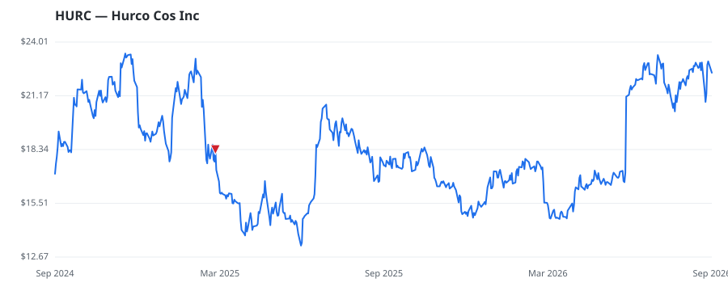

bullish · bearish · n/a — dots: price>SMA10 · SMA10>SMA50 · SMA50>SMA200 · up>down volume (20d)
Technology Hardware · micro cap

Hurco Companies Inc is an international industrial technology company that designs, manufactures, and sells computerized (CNC) machine tools for the metal cutting industry through a international sales and distribution network. Its proprietary control systems and software are sold as integral components of its machine tools. The Company also provides machine tool components, automation solutions, software options, upgrades, accessories, replacement parts, and related support services. It operates in the Americas, Europe, and Asia Pacific, with the Americas contributing the majority of revenue. INDUSTRIAL INSTRUMENTS FOR MEASUREMENT, DISPLAY, AND CONTROL · website
| Revenue | $178.6M | Net income | $-15.1M |
|---|---|---|---|
| Operating income | $-10.3M | Diluted EPS | $-2.34 |
| Assets | $264.3M | Equity | $198.8M |
| Fund | Fund alpha vs SPY | Position | % of book |
|---|---|---|---|
| Peapod Lane Capital LLC | +13% | $6M | 4.1% |
| Pacific Ridge Capital Partners, LLC | +28% | $4M | 0.7% |
Hedge data: SEC EDGAR 13F · ranked funds beat SPY in >50% of their quarters · fund alpha = mirror-portfolio return minus SPY.